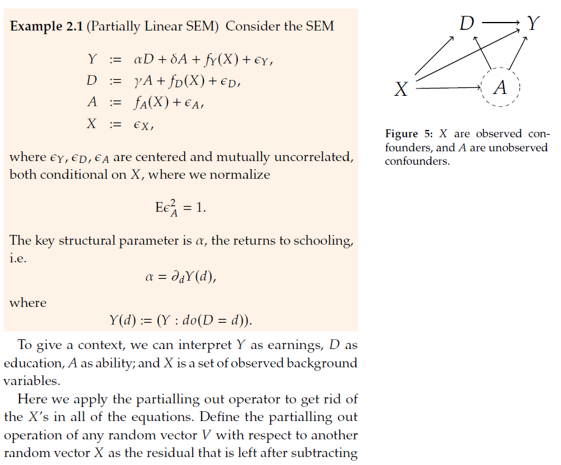
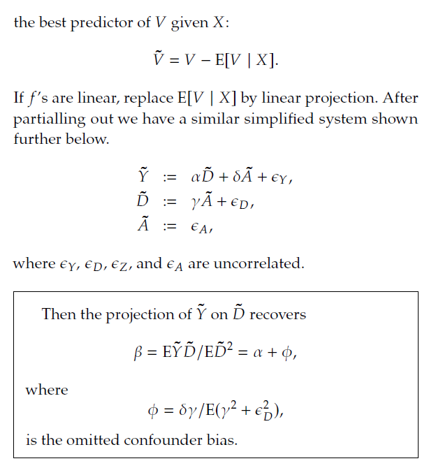
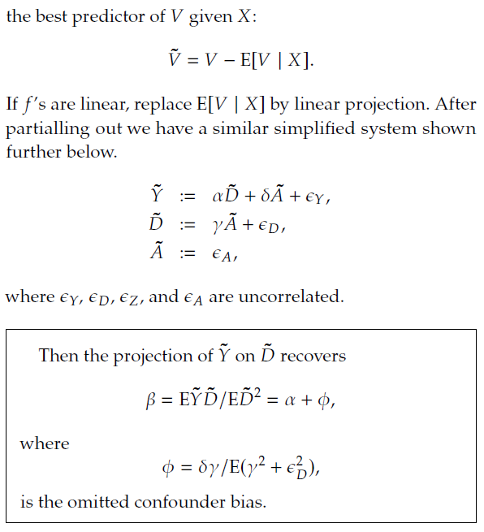
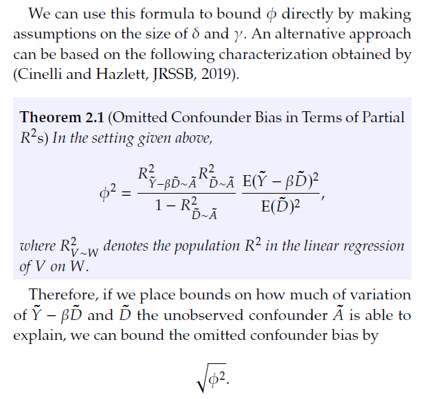
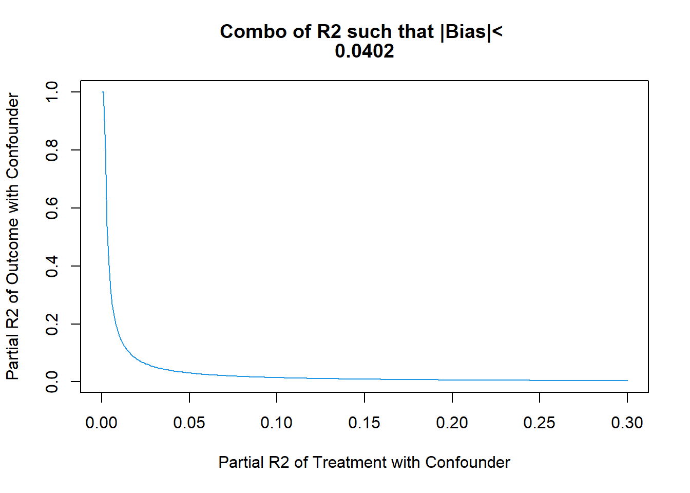
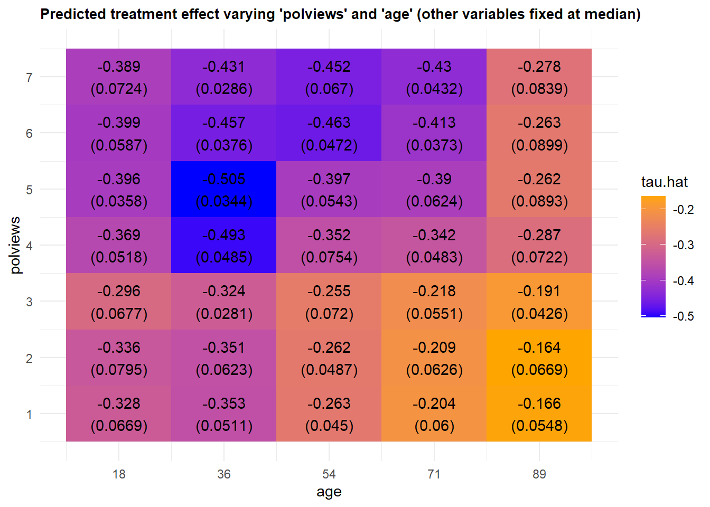
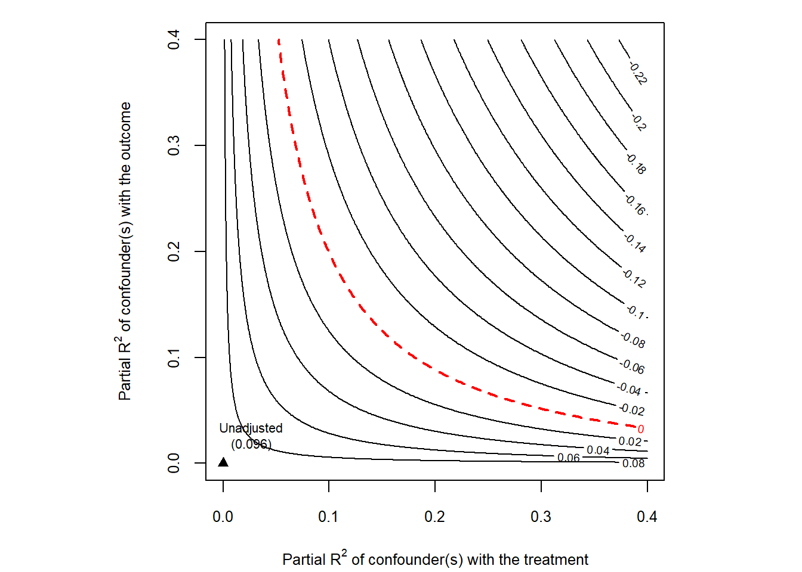

Chapter 19 Sensititivy Analysis for Unobserved Confounder with DML and Sensmakr
19.1 Here we experiment with using package “sensemakr” in conjunction with debiased ML
   
19.2 We will work on:
Mimic the partialling out procedure with machine learning tools,
And invoke Sensmakr to compute \(\phi^2\) and plot sensitivity results.
# loads package
#install.packages("sensemakr")
library(sensemakr)
# loads data
data("darfur")
import warnings
warnings.filterwarnings("ignore")
from sensemakr import sensemakr
from sensemakr import sensitivity_stats
from sensemakr import bias_functions
from sensemakr import ovb_bounds
from sensemakr import ovb_plots
import statsmodels.api as sm
import statsmodels.formula.api as smf
import numpy as np
import pandas as pd
# loads data
darfur = pd.read_csv("data/darfur.csv")Data is described here https://cran.r-project.org/web/packages/sensemakr/vignettes/sensemakr.html
The main outcome is attitude towards peace – the peacefactor. The key variable of interest is whether the responders were directly harmed (directlyharmed). We want to know if being directly harmed in the conflict causes people to support peace-enforcing measures. The measured confounders include female indicator, age, farmer, herder, voted in the past, and household size. There is also a village indicator, which we will treat as fixed effect and partial it out before conducting the analysis. The standard errors will be clustered at the village level.
19.3 Take out village fixed effects and run basic linear analysis
#get rid of village fixed effects
attach(darfur)
library(lfe)
peacefactorR<- lm(peacefactor~village)$res
directlyharmedR<- lm(directlyharmed~village)$res
femaleR<- lm(female~village)$res
ageR<- lm(age~village)$res
farmerR<- lm(farmer_dar~village)$res
herderR<- lm(herder_dar~village)$res
pastvotedR<- lm(pastvoted~village)$res
hhsizeR<- lm(hhsize_darfur~village)$res
# get rid of village fixed effects
import statsmodels.api as sm
import statsmodels.formula.api as smf
peacefactorR = smf.ols('peacefactor~village' , data=darfur).fit().resid
directlyharmedR = smf.ols('directlyharmed~village' , data=darfur).fit().resid
femaleR = smf.ols('female~village' , data=darfur).fit().resid
ageR = smf.ols('age~village' , data=darfur).fit().resid
farmerR = smf.ols('farmer_dar~village' , data=darfur).fit().resid
herderR = smf.ols('herder_dar~village' , data=darfur).fit().resid
pastvotedR = smf.ols('pastvoted~village' , data=darfur).fit().resid
hhsizeR = smf.ols('hhsize_darfur~village' , data=darfur).fit().resid
### Auxiliary code to rearrange data
darfurR = pd.concat([peacefactorR, directlyharmedR, femaleR,
ageR, farmerR, herderR, pastvotedR,
hhsizeR, darfur['village']], axis=1)
darfurR.columns = ["peacefactorR", "directlyharmedR", "femaleR",
"ageR", "farmerR", "herderR", "pastvotedR",
"hhsize_darfurR", "village"]
# Preliminary linear model analysis
# here we are clustering standard errors at the village level
summary(felm(peacefactorR~ directlyharmedR+
femaleR + ageR +
farmerR+ herderR + pastvotedR +
hhsizeR |0|0|village))##
## Call:
## felm(formula = peacefactorR ~ directlyharmedR + femaleR + ageR + farmerR + herderR + pastvotedR + hhsizeR | 0 | 0 | village)
##
## Residuals:
## Min 1Q Median 3Q Max
## -0.67487 -0.14712 0.00000 0.09857 0.90307
##
## Coefficients:
## Estimate Cluster s.e. t value Pr(>|t|)
## (Intercept) -3.681e-18 6.704e-16 -0.005 0.99562
## directlyharmedR 9.732e-02 2.382e-02 4.085 4.68e-05 ***
## femaleR -2.321e-01 2.444e-02 -9.495 < 2e-16 ***
## ageR -2.072e-03 7.441e-04 -2.784 0.00545 **
## farmerR -4.044e-02 2.956e-02 -1.368 0.17156
## herderR 1.428e-02 3.650e-02 0.391 0.69569
## pastvotedR -4.802e-02 2.688e-02 -1.787 0.07420 .
## hhsizeR 1.230e-03 2.166e-03 0.568 0.57034
## ---
## Signif. codes: 0 '***' 0.001 '**' 0.01 '*' 0.05 '.' 0.1 ' ' 1
##
## Residual standard error: 0.2437 on 1268 degrees of freedom
## Multiple R-squared(full model): 0.1542 Adjusted R-squared: 0.1496
## Multiple R-squared(proj model): 0.1542 Adjusted R-squared: 0.1496
## F-statistic(full model, *iid*):33.03 on 7 and 1268 DF, p-value: < 2.2e-16
## F-statistic(proj model): 25.44 on 7 and 485 DF, p-value: < 2.2e-16
# Preliminary linear model analysis
# here we are clustering standard errors at the village level
linear_model_1 = smf.ols('peacefactorR~ directlyharmedR+ femaleR + ageR + farmerR+ herderR + pastvotedR + hhsizeR'
,data=darfurR ).fit().get_robustcov_results(cov_type = "cluster", groups= darfurR['village'])
linear_model_1_table = linear_model_1.summary2().tables[1]
linear_model_1_table## Coef. Std.Err. ... [0.025 0.975]
## Intercept -2.003606e-15 8.016956e-16 ... -3.578831e-15 -4.283801e-16
## directlyharmedR 9.731582e-02 2.382281e-02 ... 5.050716e-02 1.441245e-01
## femaleR -2.320514e-01 2.443857e-02 ... -2.800700e-01 -1.840329e-01
## ageR -2.071749e-03 7.441260e-04 ... -3.533858e-03 -6.096402e-04
## farmerR -4.044295e-02 2.956411e-02 ... -9.853250e-02 1.764661e-02
## herderR 1.427910e-02 3.649802e-02 ... -5.743466e-02 8.599286e-02
## pastvotedR -4.802496e-02 2.687661e-02 ... -1.008339e-01 4.784016e-03
## hhsizeR 1.229812e-03 2.166312e-03 ... -3.026704e-03 5.486328e-03
##
## [8 rows x 6 columns]# here we are clustering standard errors at the village level
summary(felm(peacefactorR~ femaleR +
ageR + farmerR+ herderR +
pastvotedR + hhsizeR |0|0|village))##
## Call:
## felm(formula = peacefactorR ~ femaleR + ageR + farmerR + herderR + pastvotedR + hhsizeR | 0 | 0 | village)
##
## Residuals:
## Min 1Q Median 3Q Max
## -0.63765 -0.15168 0.00000 0.09859 0.90298
##
## Coefficients:
## Estimate Cluster s.e. t value Pr(>|t|)
## (Intercept) -2.635e-18 6.584e-16 -0.004 0.99681
## femaleR -2.415e-01 2.536e-02 -9.522 < 2e-16 ***
## ageR -2.187e-03 7.453e-04 -2.934 0.00341 **
## farmerR -4.071e-02 2.923e-02 -1.393 0.16390
## herderR 2.623e-02 3.968e-02 0.661 0.50871
## pastvotedR -4.414e-02 2.784e-02 -1.585 0.11313
## hhsizeR 1.336e-03 2.127e-03 0.628 0.52991
## ---
## Signif. codes: 0 '***' 0.001 '**' 0.01 '*' 0.05 '.' 0.1 ' ' 1
##
## Residual standard error: 0.2463 on 1269 degrees of freedom
## Multiple R-squared(full model): 0.1353 Adjusted R-squared: 0.1312
## Multiple R-squared(proj model): 0.1353 Adjusted R-squared: 0.1312
## F-statistic(full model, *iid*): 33.1 on 6 and 1269 DF, p-value: < 2.2e-16
## F-statistic(proj model): 23.07 on 6 and 485 DF, p-value: < 2.2e-16
# Linear model 2
linear_model_2 = smf.ols('peacefactorR~ femaleR + ageR + farmerR+ herderR + pastvotedR + hhsizeR'
,data=darfurR ).fit().get_robustcov_results(cov_type = "cluster", groups= darfurR['village'])
linear_model_2_table = linear_model_2.summary2().tables[1]
linear_model_2_table## Coef. Std.Err. ... [0.025 0.975]
## Intercept -1.946360e-15 7.328661e-16 ... -3.386344e-15 -5.063751e-16
## femaleR -2.415042e-01 2.536306e-02 ... -2.913393e-01 -1.916692e-01
## ageR -2.186810e-03 7.453429e-04 ... -3.651310e-03 -7.223106e-04
## farmerR -4.071431e-02 2.923021e-02 ... -9.814780e-02 1.671917e-02
## herderR 2.622875e-02 3.967810e-02 ... -5.173345e-02 1.041909e-01
## pastvotedR -4.414131e-02 2.784297e-02 ... -9.884904e-02 1.056643e-02
## hhsizeR 1.336220e-03 2.126678e-03 ... -2.842419e-03 5.514859e-03
##
## [7 rows x 6 columns]# here we are clustering standard errors at the village level
summary(felm(directlyharmedR~ femaleR +
ageR + farmerR+ herderR +
pastvotedR + hhsizeR |0|0|village))##
## Call:
## felm(formula = directlyharmedR ~ femaleR + ageR + farmerR + herderR + pastvotedR + hhsizeR | 0 | 0 | village)
##
## Residuals:
## Min 1Q Median 3Q Max
## -0.8285 -0.3129 0.0000 0.2630 0.9076
##
## Coefficients:
## Estimate Cluster s.e. t value Pr(>|t|)
## (Intercept) 1.075e-17 5.196e-16 0.021 0.9835
## femaleR -9.714e-02 5.129e-02 -1.894 0.0585 .
## ageR -1.182e-03 1.151e-03 -1.028 0.3044
## farmerR -2.789e-03 4.280e-02 -0.065 0.9481
## herderR 1.228e-01 5.064e-02 2.425 0.0155 *
## pastvotedR 3.991e-02 3.366e-02 1.186 0.2360
## hhsizeR 1.093e-03 3.286e-03 0.333 0.7394
## ---
## Signif. codes: 0 '***' 0.001 '**' 0.01 '*' 0.05 '.' 0.1 ' ' 1
##
## Residual standard error: 0.3744 on 1269 degrees of freedom
## Multiple R-squared(full model): 0.0179 Adjusted R-squared: 0.01326
## Multiple R-squared(proj model): 0.0179 Adjusted R-squared: 0.01326
## F-statistic(full model, *iid*):3.856 on 6 and 1269 DF, p-value: 0.0008089
## F-statistic(proj model): 3.828 on 6 and 485 DF, p-value: 0.0009698
# Linear model 3
linear_model_3 = smf.ols('directlyharmedR~ femaleR + ageR + farmerR+ herderR + pastvotedR + hhsizeR'
,data=darfurR ).fit().get_robustcov_results(cov_type = "cluster", groups= darfurR['village'])
linear_model_3_table = linear_model_3.summary2().tables[1]
linear_model_3_table## Coef. Std.Err. ... [0.025 0.975]
## Intercept 5.867702e-16 7.973710e-16 ... -9.799580e-16 2.153498e-15
## femaleR -9.713517e-02 5.128637e-02 ... -1.979061e-01 3.635740e-03
## ageR -1.182350e-03 1.150680e-03 ... -3.443283e-03 1.078584e-03
## farmerR -2.788538e-03 4.280159e-02 ... -8.688797e-02 8.131090e-02
## herderR 1.227925e-01 5.064352e-02 ... 2.328466e-02 2.223002e-01
## pastvotedR 3.990773e-02 3.366253e-02 ... -2.623468e-02 1.060501e-01
## hhsizeR 1.093431e-03 3.286160e-03 ... -5.363437e-03 7.550298e-03
##
## [7 rows x 6 columns]19.4 We first use Lasso for Partilling Out Controls
library(hdm)
resY = rlasso(peacefactorR ~ (femaleR +
ageR +
farmerR+
herderR +
pastvotedR +
hhsizeR)^3, post=F)$res
resD = rlasso(directlyharmedR ~ (femaleR +
ageR +
farmerR +
herderR +
pastvotedR +
hhsizeR)^3 , post=F)$res
import hdmpy
import patsy
from patsy import ModelDesc, Term, EvalFactor
X = patsy.dmatrix("(femaleR + ageR + farmerR+ herderR + pastvotedR + hhsizeR)**3", darfurR)
Y = darfurR['peacefactorR'].to_numpy()
D = darfurR['directlyharmedR'].to_numpy()
resY = hdmpy.rlasso(X[: , 1:],Y, post = False).est['residuals'].reshape( Y.size,)
resD = hdmpy.rlasso(X[: , 1:],D, post = False).est['residuals'].reshape( D.size,)
FVU_Y = 1 - np.var(resY)/np.var(peacefactorR)
FVU_D = 1 - np.var(resD)/np.var(directlyharmedR)summary( rlasso(peacefactorR ~ (femaleR +
ageR +
farmerR+
herderR +
pastvotedR +
hhsizeR)^3,
post=F) )##
## Call:
## rlasso.formula(formula = peacefactorR ~ (femaleR + ageR + farmerR +
## herderR + pastvotedR + hhsizeR)^3, post = F)
##
## Post-Lasso Estimation: FALSE
##
## Total number of variables: 41
## Number of selected variables: 5
##
## Residuals:
## Min 1Q Median 3Q Max
## -0.6045408 -0.1552131 0.0005935 0.0899936 0.8968939
##
## Estimate
## (Intercept) -0.001
## femaleR -0.201
## ageR 0.000
## farmerR -0.004
## herderR 0.000
## pastvotedR 0.000
## hhsizeR 0.000
## femaleR:ageR 0.000
## femaleR:farmerR 0.000
## femaleR:herderR 0.000
## femaleR:pastvotedR 0.026
## femaleR:hhsizeR 0.000
## ageR:farmerR 0.000
## ageR:herderR 0.000
## ageR:pastvotedR 0.000
## ageR:hhsizeR 0.000
## farmerR:herderR 0.000
## farmerR:pastvotedR 0.000
## farmerR:hhsizeR 0.000
## herderR:pastvotedR 0.000
## herderR:hhsizeR 0.000
## pastvotedR:hhsizeR 0.000
## femaleR:ageR:farmerR 0.000
## femaleR:ageR:herderR 0.000
## femaleR:ageR:pastvotedR 0.000
## femaleR:ageR:hhsizeR 0.000
## femaleR:farmerR:herderR 0.000
## femaleR:farmerR:pastvotedR 0.000
## femaleR:farmerR:hhsizeR 0.000
## femaleR:herderR:pastvotedR 0.000
## femaleR:herderR:hhsizeR 0.000
## femaleR:pastvotedR:hhsizeR 0.000
## ageR:farmerR:herderR 0.000
## ageR:farmerR:pastvotedR 0.002
## ageR:farmerR:hhsizeR 0.000
## ageR:herderR:pastvotedR 0.000
## ageR:herderR:hhsizeR 0.000
## ageR:pastvotedR:hhsizeR 0.000
## farmerR:herderR:pastvotedR 0.000
## farmerR:herderR:hhsizeR 0.000
## farmerR:pastvotedR:hhsizeR 0.000
## herderR:pastvotedR:hhsizeR 0.000
##
## Residual standard error: 0.2472
## Multiple R-squared: 0.1251
## Adjusted R-squared: 0.1217
## Joint significance test:
## the sup score statistic for joint significance test is 16.89 with a p-value of 0.626
rlasso_1 = hdmpy.rlasso(X[: , 1:],Y, post = False)
def summary_rlasso( mod , X1):
ob1 = mod.est['coefficients'].rename(columns = { 0 : "Est."})
ob1.index = X1.design_info.column_names
return ob1
summary_rlasso(rlasso_1 , X)## Est.
## Intercept -0.000593
## femaleR -0.200735
## ageR -0.000381
## farmerR -0.004220
## herderR 0.000000
## pastvotedR 0.000000
## hhsizeR 0.000000
## femaleR:ageR 0.000000
## femaleR:farmerR 0.000000
## femaleR:herderR 0.000000
## femaleR:pastvotedR 0.025755
## femaleR:hhsizeR 0.000000
## ageR:farmerR 0.000000
## ageR:herderR 0.000000
## ageR:pastvotedR 0.000000
## ageR:hhsizeR 0.000000
## farmerR:herderR 0.000000
## farmerR:pastvotedR 0.000000
## farmerR:hhsizeR 0.000000
## herderR:pastvotedR 0.000000
## herderR:hhsizeR 0.000000
## pastvotedR:hhsizeR 0.000000
## femaleR:ageR:farmerR 0.000000
## femaleR:ageR:herderR 0.000000
## femaleR:ageR:pastvotedR 0.000000
## femaleR:ageR:hhsizeR 0.000000
## femaleR:farmerR:herderR 0.000000
## femaleR:farmerR:pastvotedR 0.000000
## femaleR:farmerR:hhsizeR 0.000000
## femaleR:herderR:pastvotedR 0.000000
## femaleR:herderR:hhsizeR 0.000000
## femaleR:pastvotedR:hhsizeR 0.000000
## ageR:farmerR:herderR 0.000000
## ageR:farmerR:pastvotedR 0.001897
## ageR:farmerR:hhsizeR 0.000000
## ageR:herderR:pastvotedR 0.000000
## ageR:herderR:hhsizeR 0.000000
## ageR:pastvotedR:hhsizeR 0.000000
## farmerR:herderR:pastvotedR 0.000000
## farmerR:herderR:hhsizeR 0.000000
## farmerR:pastvotedR:hhsizeR 0.000000
## herderR:pastvotedR:hhsizeR 0.000000print(c("Controls explain the following fraction of variance of Outcome", 1-var(resY)/var(peacefactorR)))## [1] "Controls explain the following fraction of variance of Outcome"
## [2] "0.125108054898996"
print("Controls explain the following fraction of variance of Outcome", FVU_Y)## Controls explain the following fraction of variance of Outcome 0.12510805781802825print(c("Controls explain the following fraction of variance of Treatment", 1-var(resD)/var(directlyharmedR)))## [1] "Controls explain the following fraction of variance of Treatment"
## [2] "0.0119842379295229"
print("Controls explain the following fraction of variance of treatment", FVU_D)## Controls explain the following fraction of variance of treatment 0.011984223484257428library(lfe)
dml.darfur.model= felm(resY ~ resD|0|0|village) # cluster SEs by village
summary(dml.darfur.model,
robust=T) #culster SE by village##
## Call:
## felm(formula = resY ~ resD | 0 | 0 | village)
##
## Residuals:
## Min 1Q Median 3Q Max
## -0.63410 -0.15299 0.00069 0.09305 0.89593
##
## Coefficients:
## Estimate Cluster s.e. t value Pr(>|t|)
## (Intercept) -1.250e-18 1.594e-04 0.000 1
## resD 1.003e-01 2.443e-02 4.108 4.25e-05 ***
## ---
## Signif. codes: 0 '***' 0.001 '**' 0.01 '*' 0.05 '.' 0.1 ' ' 1
##
## Residual standard error: 0.2444 on 1274 degrees of freedom
## Multiple R-squared(full model): 0.02312 Adjusted R-squared: 0.02235
## Multiple R-squared(proj model): 0.02312 Adjusted R-squared: 0.02235
## F-statistic(full model, *iid*):30.15 on 1 and 1274 DF, p-value: 4.82e-08
## F-statistic(proj model): 16.87 on 1 and 485 DF, p-value: 4.693e-05
# Filan estimation
darfurR['resY'] = resY
darfurR['resD'] = resD
# Culster SE by village
dml_darfur_model = smf.ols('resY~ resD',data=darfurR ).fit().get_robustcov_results(cov_type = "cluster", groups= darfurR['village'])
dml_darfur_model_table = dml_darfur_model.summary2().tables[1]
dml_darfur_model_table## Coef. Std.Err. t P>|t| [0.025 0.975]
## Intercept -6.372846e-10 0.000159 -0.000004 0.999997 -0.000313 0.000313
## resD 1.003364e-01 0.024427 4.107546 0.000047 0.052340 0.148333dml.darfur.model= lm(resY ~ resD) #lineaer model to use as input in sensemakr
# linear model to use as input in sensemakr
dml_darfur_model= smf.ols('resY~ resD',data=darfurR ).fit()
dml_darfur_model_table = dml_darfur_model.summary2().tables[1]19.5 Manual Bias Analysis
# Main estimate
beta = dml.darfur.model$coef[2]
# Hypothetical values of partial R2s
R2.YC = .16; R2.DC = .01
# Elements of the formal
kappa<- (R2.YC * R2.DC)/(1- R2.DC)
varianceRatio<- mean(dml.darfur.model$res^2)/mean(dml.darfur.model$res^2)
# Compute square bias
BiasSq <- kappa*varianceRatio
# Compute absolute value of the bias
print(sqrt(BiasSq))## [1] 0.04020151
import matplotlib.pyplot as plt
beta = dml_darfur_model_table['Coef.'][1]
# Hypothetical values of partial R2s
R2_YC = .16
R2_DC = .01
# Elements of the formal
kappa = (R2_YC * R2_DC)/(1- R2_DC)
varianceRatio = np.mean(dml_darfur_model.resid**2)/np.mean(dml_darfur_model.resid**2)
# Compute square bias
BiasSq = kappa*varianceRatio
# Compute absolute value of the bias
print(np.sqrt(BiasSq))## 0.04020151261036848# plotting
gridR2.DC<- seq(0,.3, by=.001)
gridR2.YC<- kappa*(1 - gridR2.DC)/gridR2.DC
gridR2.YC<- ifelse(gridR2.YC> 1, 1, gridR2.YC);
plot(gridR2.DC,
gridR2.YC,
type="l", col=4,
xlab="Partial R2 of Treatment with Confounder",
ylab="Partial R2 of Outcome with Confounder",
main= c("Combo of R2 such that |Bias|< ", round(sqrt(BiasSq), digits=4))
)
# plotting
gridR2_DC = np.arange(0,0.3,0.001)
gridR2_YC = kappa*(1 - gridR2_DC)/gridR2_DC
gridR2_YC = np.where(gridR2_YC > 1, 1, gridR2_YC)
plt.title("Combo of R2 such that |Bias|<{}".format(round(np.sqrt(BiasSq), 5)))## Text(0.5, 1.0, 'Combo of R2 such that |Bias|<0.0402')plt.xlabel("Partial R2 of Treatment with Confounder") ## Text(0.5, 0, 'Partial R2 of Treatment with Confounder')plt.ylabel("Partial R2 of Outcome with Confounder") ## Text(0, 0.5, 'Partial R2 of Outcome with Confounder')plt.plot(gridR2_DC,gridR2_YC) ## [<matplotlib.lines.Line2D object at 0x000000004ABF09A0>]plt.show()
19.6 Bias Analysis with Sensemakr
dml.darfur.sensitivity <- sensemakr(model = dml.darfur.model,
treatment = "resD")
summary(dml.darfur.sensitivity)## Sensitivity Analysis to Unobserved Confounding
##
## Model Formula: resY ~ resD
##
## Null hypothesis: q = 1 and reduce = TRUE
## -- This means we are considering biases that reduce the absolute value of the current estimate.
## -- The null hypothesis deemed problematic is H0:tau = 0
##
## Unadjusted Estimates of 'resD':
## Coef. estimate: 0.1003
## Standard Error: 0.0183
## t-value (H0:tau = 0): 5.491
##
## Sensitivity Statistics:
## Partial R2 of treatment with outcome: 0.0231
## Robustness Value, q = 1: 0.1425
## Robustness Value, q = 1, alpha = 0.05: 0.0941
##
## Verbal interpretation of sensitivity statistics:
##
## -- Partial R2 of the treatment with the outcome: an extreme confounder (orthogonal to the covariates) that explains 100% of the residual variance of the outcome, would need to explain at least 2.31% of the residual variance of the treatment to fully account for the observed estimated effect.
##
## -- Robustness Value, q = 1: unobserved confounders (orthogonal to the covariates) that explain more than 14.25% of the residual variance of both the treatment and the outcome are strong enough to bring the point estimate to 0 (a bias of 100% of the original estimate). Conversely, unobserved confounders that do not explain more than 14.25% of the residual variance of both the treatment and the outcome are not strong enough to bring the point estimate to 0.
##
## -- Robustness Value, q = 1, alpha = 0.05: unobserved confounders (orthogonal to the covariates) that explain more than 9.41% of the residual variance of both the treatment and the outcome are strong enough to bring the estimate to a range where it is no longer 'statistically different' from 0 (a bias of 100% of the original estimate), at the significance level of alpha = 0.05. Conversely, unobserved confounders that do not explain more than 9.41% of the residual variance of both the treatment and the outcome are not strong enough to bring the estimate to a range where it is no longer 'statistically different' from 0, at the significance level of alpha = 0.05.
# Imports
from sensemakr import sensemakr
from sensemakr import sensitivity_stats
from sensemakr import bias_functions
from sensemakr import ovb_bounds
from sensemakr import ovb_plots
import statsmodels.api as sm
import statsmodels.formula.api as smf
import numpy as np
import pandas as pd
# We need to double check why the function does not allow to run withour the benchmark_covariates argument
dml_darfur_sensitivity = sensemakr.Sensemakr(dml_darfur_model, "resD", benchmark_covariates = "Intercept")
ovb_plots.extract_from_sense_obj( dml_darfur_sensitivity )## ('resD', 0.10033644720396692, 0.018272934212004013, 1274.0, 0 2.166013e-18
## Name: r2dz_x, dtype: float64, 0 6.808156e-18
## Name: r2yz_dx, dtype: float64, 0 1x Intercept
## Name: bound_label, dtype: object, True, 0.0, 1.9618292555617416)# Make a contour plot for the estimate
plot(dml.darfur.sensitivity, nlevels = 15)
# Make a contour plot for the estimate
ovb_plots.ovb_contour_plot(sense_obj=dml_darfur_sensitivity, sensitivity_of='estimate')
plt.show()
19.7 Next We use Random Forest as ML tool for Partialling Out
The following code does DML with clsutered standard errors by ClusterID
DML2.for.PLM <- function(x, d, y, dreg, yreg, nfold=2, clusterID) {
nobs <- nrow(x) #number of observations
foldid <- rep.int(1:nfold,times = ceiling(nobs/nfold))[sample.int(nobs)] #define folds indices
I <- split(1:nobs, foldid) #split observation indices into folds
ytil <- dtil <- rep(NA, nobs)
cat("fold: ")
for(b in 1:length(I)){
dfit <- dreg(x[-I[[b]],], d[-I[[b]]]) #take a fold out
yfit <- yreg(x[-I[[b]],], y[-I[[b]]]) # take a foldt out
dhat <- predict(dfit, x[I[[b]],], type="response") #predict the left-out fold
yhat <- predict(yfit, x[I[[b]],], type="response") #predict the left-out fold
dtil[I[[b]]] <- (d[I[[b]]] - dhat) #record residual for the left-out fold
ytil[I[[b]]] <- (y[I[[b]]] - yhat) #record residial for the left-out fold
cat(b," ")
}
rfit <- felm(ytil ~ dtil |0|0|clusterID) #get clustered standard errors using felm
rfitSummary<- summary(rfit)
coef.est <- rfitSummary$coef[2] #extract coefficient
se <- rfitSummary$coef[2,2] #record robust standard error
cat(sprintf("\ncoef (se) = %g (%g)\n", coef.est , se)) #printing output
return( list(coef.est =coef.est , se=se, dtil=dtil, ytil=ytil) ) #save output and residuals
}
import itertools
from itertools import compress
def DML2_for_PLM(x, d, y, dreg, yreg, nfold, clu):
# Num ob observations
nobs = x.shape[0]
# Define folds indices
list_1 = [*range(0, nfold, 1)]*nobs
sample = np.random.choice(nobs,nobs, replace=False).tolist()
foldid = [list_1[index] for index in sample]
# Create split function(similar to R)
def split(z, f):
count = max(f) + 1
return tuple( list(itertools.compress(z, (el == i for el in f))) for i in range(count) )
# Split observation indices into folds
list_2 = [*range(0, nobs, 1)]
I = split(list_2, foldid)
# loop to save results
for b in range(0,len(I)):
# Split data - index to keep are in mask as booleans
include_idx = set(I[b]) #Here should go I[b] Set is more efficient, but doesn't reorder your elements if that is desireable
mask = np.array([(i in include_idx) for i in range(len(x))])
# Lasso regression, excluding folds selected
dfit = dreg(x[~mask,], d[~mask,])
yfit = yreg(x[~mask,], y[~mask,])
# predict estimates using the
dhat = dfit.predict( x[mask,] )
yhat = yfit.predict( x[mask,] )
# Create array to save errors
dtil = np.zeros( len(x) ).reshape( len(x) , 1 )
ytil = np.zeros( len(x) ).reshape( len(x) , 1 )
# save errors
dtil[mask] = d[mask,] - dhat.reshape( len(I[b]) , 1 )
ytil[mask] = y[mask,] - yhat.reshape( len(I[b]) , 1 )
print(b, " ")
# Create dataframe
data_2 = pd.DataFrame(np.concatenate( ( ytil, dtil,clu ), axis = 1), columns = ['ytil','dtil','CountyCode'])
# OLS clustering at the County level
model = "ytil ~ dtil"
baseline_ols = smf.ols(model , data=data_2).fit().get_robustcov_results(cov_type = "cluster", groups= data_2['CountyCode'])
coef_est = baseline_ols.summary2().tables[1]['Coef.']['dtil']
se = baseline_ols.summary2().tables[1]['Std.Err.']['dtil']
print("Coefficient is {}, SE is equal to {}".format(coef_est, se))
return coef_est, se, dtil, ytil, data_2library(randomForest) #random Forest library
x= model.matrix(~ femaleR + ageR + farmerR + herderR + pastvotedR + hhsizeR)
d= directlyharmedR
y = peacefactorR;
dim(x)## [1] 1276 7
from sklearn.tree import DecisionTreeRegressor
from sklearn.ensemble import RandomForestRegressor
from sklearn.ensemble import GradientBoostingRegressor
from sklearn.preprocessing import LabelEncoder
# This new matrix include intercept
x = patsy.dmatrix("~ femaleR + ageR + farmerR + herderR + pastvotedR + hhsizeR", darfurR)
y = darfurR['peacefactorR'].to_numpy().reshape( len(Y) , 1 )
d = darfurR['directlyharmedR'].to_numpy().reshape( len(Y) , 1 )
x.shape## (1276, 7)#DML with Random Forest:
dreg <- function(x,d){ randomForest(x, d) } #ML method=Forest
yreg <- function(x,y){ randomForest(x, y) } #ML method=Forest
set.seed(1)
DML2.RF = DML2.for.PLM(x, d, y, dreg, yreg, nfold=10, clusterID=village)## fold: 1 2 3 4 5 6 7 8 9 10
## coef (se) = 0.0963494 (0.0243608)resY = DML2.RF$ytil
resD = DML2.RF$dtil
# creating instance of labelencoder
labelencoder = LabelEncoder()
# Assigning numerical values and storing in another column
darfurR['village_clu'] = labelencoder.fit_transform(darfurR['village'])
# Create cluster object
CLU = darfurR['village_clu']
clu = CLU.to_numpy().reshape( len(Y) , 1 )
#DML with cross-validated Lasso:
def dreg(x,d):
result = RandomForestRegressor( random_state = 0 ).fit( x, d )
return result
def yreg(x,y):
result = RandomForestRegressor( random_state = 0 ).fit( x, y )
return result
DML2_RF = DML2_for_PLM(x, d, y, dreg, yreg, 2, clu) # set to 2 due to computation time## 0
## 1
## Coefficient is 0.12079217531137135, SE is equal to 0.033980547376392126resY = DML2_RF[2]
resD = DML2_RF[3]print(c("Controls explain the following fraction of variance of Outcome", max(1-var(resY)/var(peacefactorR),0)))## [1] "Controls explain the following fraction of variance of Outcome"
## [2] "0.0489042746089093"
FVU_Y = 1 - np.var(resY)/np.var(peacefactorR)
FVU_D = 1 - np.var(resD)/np.var(directlyharmedR)
print("Controls explain the following fraction of variance of Outcome", FVU_Y)## Controls explain the following fraction of variance of Outcome -0.16888432052333724print(c("Controls explain the following fraction of variance of Treatment", max(1-var(resD)/var(directlyharmedR),0)))## [1] "Controls explain the following fraction of variance of Treatment"
## [2] "0"
print("Controls explain the following fraction of variance of treatment", FVU_D)## Controls explain the following fraction of variance of treatment 0.7327860005131104dml.darfur.model= lm(resY~resD)
dml.darfur.sensitivity <- sensemakr(model = dml.darfur.model,
treatment = "resD")
summary(dml.darfur.sensitivity)## Sensitivity Analysis to Unobserved Confounding
##
## Model Formula: resY ~ resD
##
## Null hypothesis: q = 1 and reduce = TRUE
## -- This means we are considering biases that reduce the absolute value of the current estimate.
## -- The null hypothesis deemed problematic is H0:tau = 0
##
## Unadjusted Estimates of 'resD':
## Coef. estimate: 0.0963
## Standard Error: 0.0182
## t-value (H0:tau = 0): 5.305
##
## Sensitivity Statistics:
## Partial R2 of treatment with outcome: 0.0216
## Robustness Value, q = 1: 0.138
## Robustness Value, q = 1, alpha = 0.05: 0.0894
##
## Verbal interpretation of sensitivity statistics:
##
## -- Partial R2 of the treatment with the outcome: an extreme confounder (orthogonal to the covariates) that explains 100% of the residual variance of the outcome, would need to explain at least 2.16% of the residual variance of the treatment to fully account for the observed estimated effect.
##
## -- Robustness Value, q = 1: unobserved confounders (orthogonal to the covariates) that explain more than 13.8% of the residual variance of both the treatment and the outcome are strong enough to bring the point estimate to 0 (a bias of 100% of the original estimate). Conversely, unobserved confounders that do not explain more than 13.8% of the residual variance of both the treatment and the outcome are not strong enough to bring the point estimate to 0.
##
## -- Robustness Value, q = 1, alpha = 0.05: unobserved confounders (orthogonal to the covariates) that explain more than 8.94% of the residual variance of both the treatment and the outcome are strong enough to bring the estimate to a range where it is no longer 'statistically different' from 0 (a bias of 100% of the original estimate), at the significance level of alpha = 0.05. Conversely, unobserved confounders that do not explain more than 8.94% of the residual variance of both the treatment and the outcome are not strong enough to bring the estimate to a range where it is no longer 'statistically different' from 0, at the significance level of alpha = 0.05.
darfurR['resY_rf'] = resY
darfurR['resD_rf'] = resD
# linear model to use as input in sensemakr
dml_darfur_model_rf= smf.ols('resY_rf~ resD_rf',data=darfurR ).fit()
# We need to double check why the function does not allow to run withour the benchmark_covariates argument
sensemakr.Sensemakr(dml_darfur_model_rf, "resD_rf", benchmark_covariates = "Intercept")## <sensemakr.sensemakr.Sensemakr object at 0x0000000054938430>dml_darfur_sensitivity.summary()## Sensitivity Analysis to Unobserved Confounding
##
## Model Formula: resY ~ Intercept + resD
##
## Null hypothesis: q = 1 and reduce = True
##
## -- This means we are considering biases that reduce the absolute value of the current estimate.
## -- The null hypothesis deemed problematic is H0:tau = 0.0
##
## Unadjusted Estimates of ' resD ':
## Coef. estimate: 0.1
## Standard Error: 0.018
## t-value: 5.491
##
## Sensitivity Statistics:
## Partial R2 of treatment with outcome: 0.023
## Robustness Value, q = 1 : 0.142
## Robustness Value, q = 1 alpha = 0.05 : 0.094
##
## Verbal interpretation of sensitivity statistics:
##
## -- Partial R2 of the treatment with the outcome: an extreme confounder (orthogonal to the covariates) that explains 100% of the residual variance of the outcome, would need to explain at least 2.311921044413477 % of the residual variance of the treatment to fully account for the observed estimated effect.
##
## -- Robustness Value, q = 1 : unobserved confounders (orthogonal to the covariates) that explain more than 14.245999027817676 % of the residual variance of both the treatment and the outcome are strong enough to bring the point estimate to 0.0 (a bias of 100.0 % of the original estimate). Conversely, unobserved confounders that do not explain more than 14.245999027817676 % of the residual variance of both the treatment and the outcome are not strong enough to bring the point estimate to 0.0 .
##
## -- Robustness Value, q = 1 , alpha = 0.05 : unobserved confounders (orthogonal to the covariates) that explain more than 9.408806814165754 % of the residual variance of both the treatment and the outcome are strong enough to bring the estimate to a range where it is no longer 'statistically different' from 0.0 (a bias of 100.0 % of the original estimate), at the significance level of alpha = 0.05 . Conversely, unobserved confounders that do not explain more than 9.408806814165754 % of the residual variance of both the treatment and the outcome are not strong enough to bring the estimate to a range where it is no longer 'statistically different' from 0.0 , at the significance level of alpha = 0.05 .
##
## Bounds on omitted variable bias:
## --The table below shows the maximum strength of unobserved confounders with association with the treatment and the outcome bounded by a multiple of the observed explanatory power of the chosen benchmark covariate(s).
##
## bound_label r2dz_x ... adjusted_lower_CI adjusted_upper_CI
## 0 1x Intercept 2.166013e-18 ... 0.064474 0.136199
##
## [1 rows x 9 columns]# Make a contour plot for the estimate
plot(dml.darfur.sensitivity,nlevels = 15)
# Make a contour plot for the estimate
ovb_plots.ovb_contour_plot(sense_obj=dml_darfur_sensitivity, sensitivity_of='estimate')
plt.show()